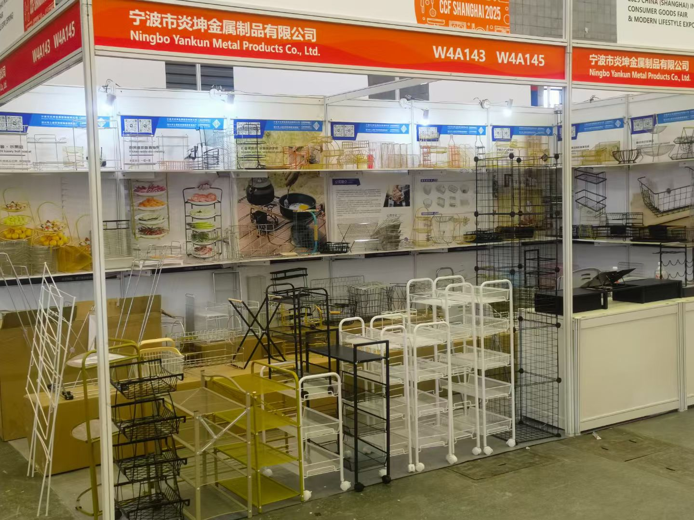
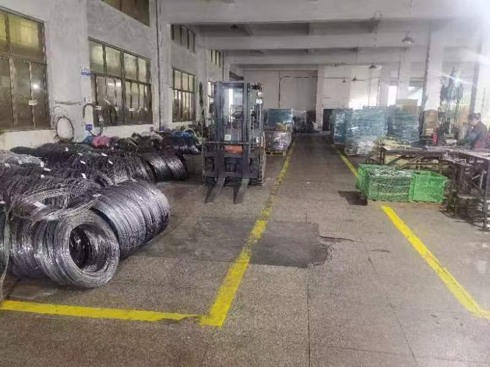
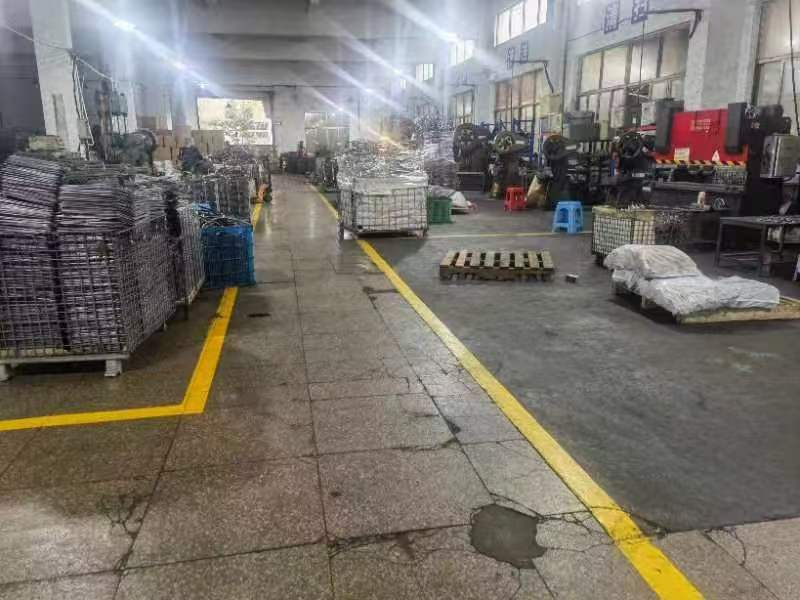
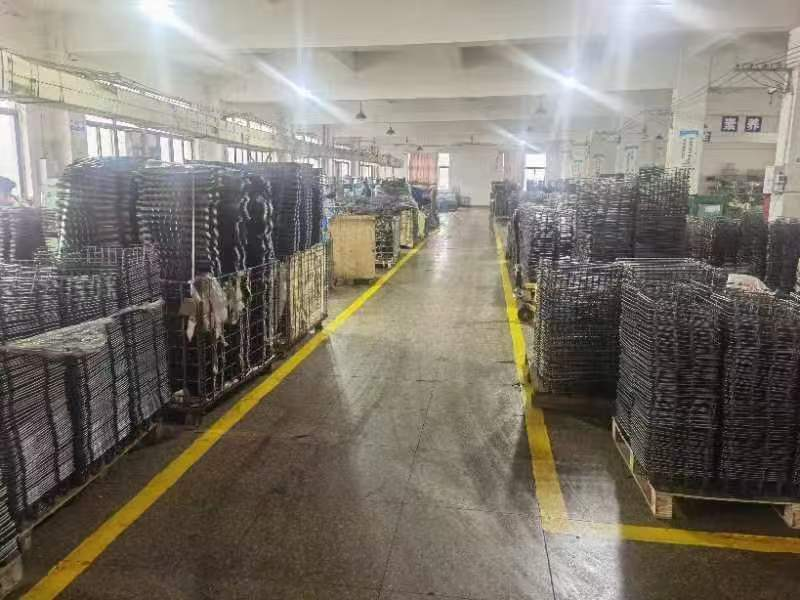
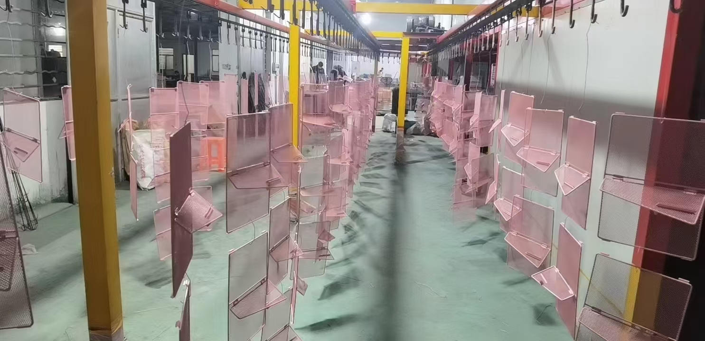
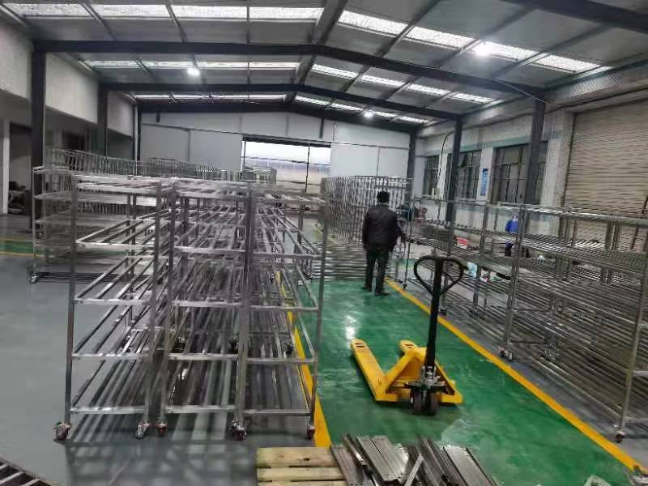
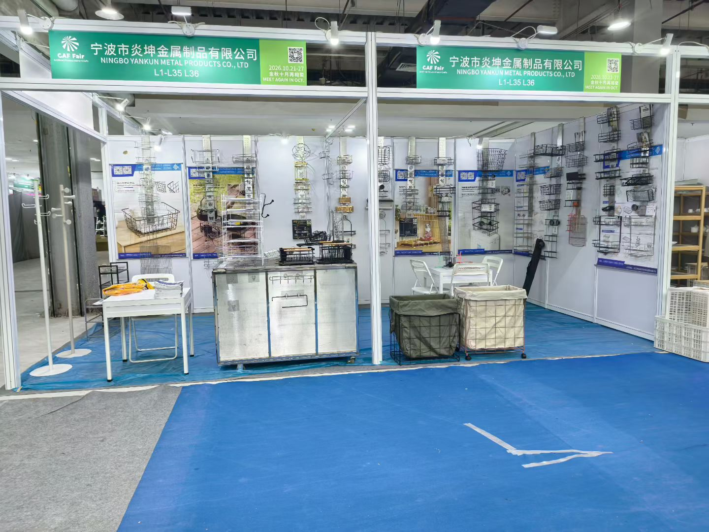
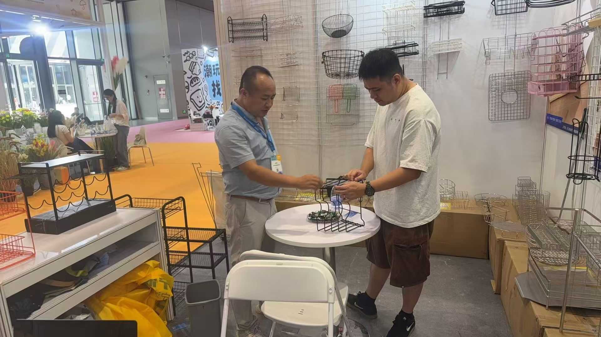
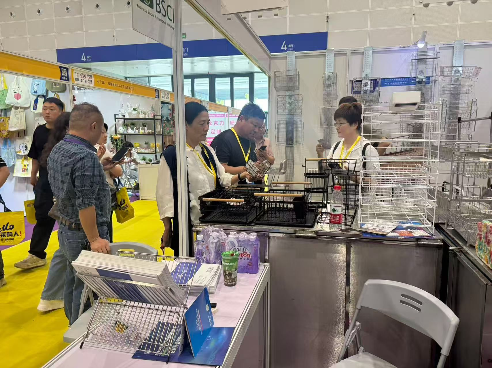
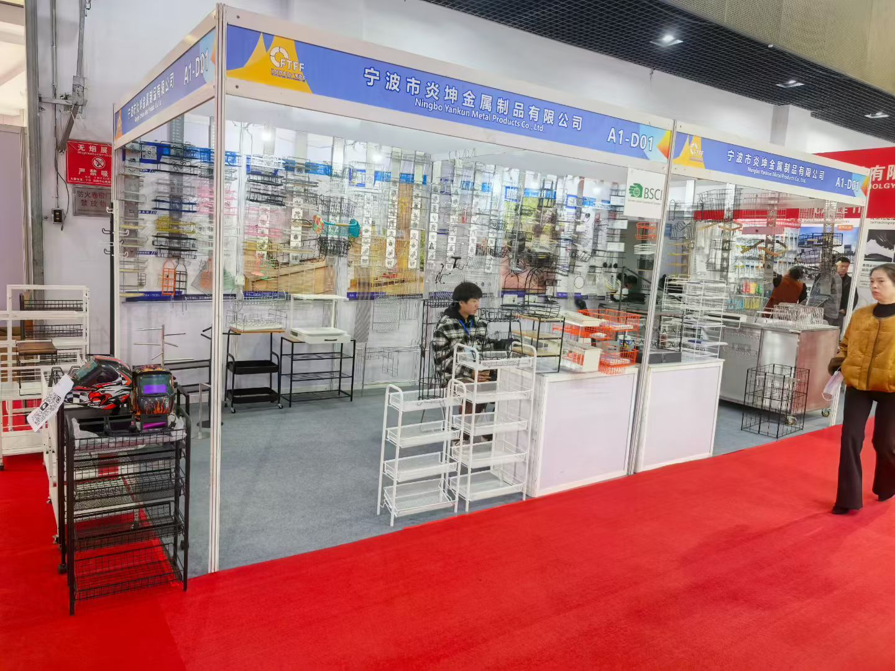

Sample confirmation
Approved samples define structure, finish, labels and packing before repeat production.
Ningbo Yankun Metal Products Co., LTD was established in 2020 and serves global B2B buyers with wire metal storage, kitchen, pet and mesh rack products.
No. 2 Fengming Road, Lizhou Street, Yuyao City, Zhejiang Province, China.
Located in Zhejiang's established manufacturing region with access to Ningbo export logistics.
ISO9001 quality management with SGS, Sedex and ISO14001 support in buyer communication.
Recent exhibition appearances across household goods, factory sourcing and export trade channels.
Yankun focuses on wire metal products that need hands-on factory control: shelves, baskets, kitchen racks, pet cages and outdoor mesh products. The team works with importers and private-label sellers who care about stable samples, repeatable finishing, practical packaging and realistic production timelines.
Instead of presenting a generic catalog-only website, the factory is positioned around buyer workflows: sample review, quotation, surface treatment confirmation, packaging artwork, pre-shipment inspection and export-ready cartons.

Buyers can discuss the workflow early so product structure, finishing choice and packaging plan are aligned before mass production starts.
Wire and frame materials are checked before cutting and forming.
The site uses actual project materials and factory photos so buyers can inspect the production environment instead of seeing anonymous stock imagery.





Yankun's inspection attention covers dimensions, welding, surface finish, carton strength, labels, barcode accuracy and pre-shipment documentation.
Approved samples define structure, finish, labels and packing before repeat production.
Production checks focus on wire geometry, weld joints, coating coverage and functional details.
Carton marks, barcode labels, product protection and shipment photos are prepared for buyers.
Yankun has displayed wire metal product lines at household goods, factory expo, cross-border ecommerce, Canton Fair and hardware trade events.




Send the product category and market requirements, and the team will align samples, documents and timeline.